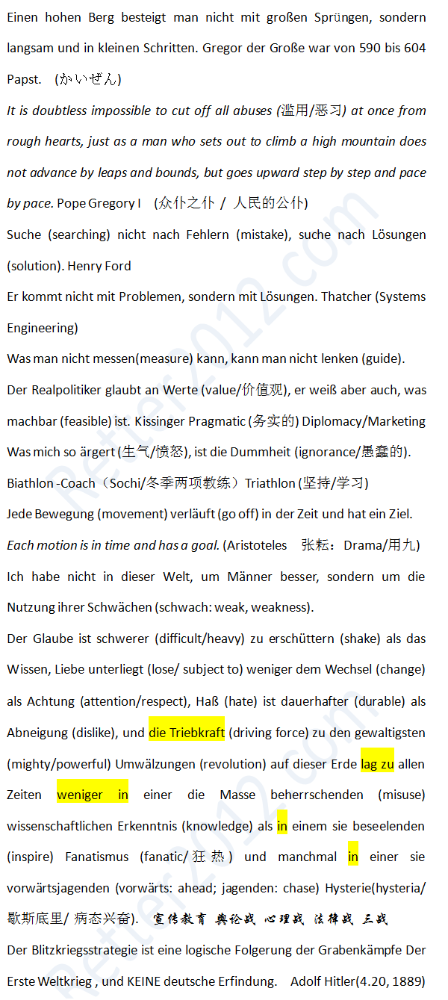

返回主页
德语名言：激励奋斗（4）

Faith is harder to shake than knowledge, love succumbs less to change than respect, hate is more enduring than aversion, and the impetus to the mightiest upheavals on this earth has at all times consisted less in a scientific knowledge dominating the masses than in a fanaticism 狂热 which inspired them and sometimes in a hysteria歇斯底里/病态兴奋which drove them forward.
Eloquence: I start with people's growth, my own growth included. Help others get better, that is, help people who work for you grow.
Cobb: I will split up my father's empire. Now this is obviously an idea that Robert Fischer will choose to reject - which is why we need to plant it deep in his subconscious. Subconscious is fueled by emotion, right? Not reason. We need to find a way to translate this into an emotional concept.
Arthur: How do you translate a business strategy into an emotion?
Cobb: Well, that's what we're here to figure out, right? Now Fischer's relationship with his father is stressed, to say the least...
Eames: Well, can we run with that? Suggest splitting up the empire as a "screw-you" to the old man?
Cobb: No, cause I think positive emotion trumps negative emotion every time. We all crave(渴求) reconciliation(和解) - we're catharsis (宣泄). We need Robert Fischer to have a positive emotional reaction to all this.
Eames: Alright, will try this. My father accepts that I want to create for myself, not follow in his footsteps.
Cobb: That might work.
(戏剧/台词/参谋部/写作工厂/知识生产/Memeplex/Prj Mgt)
足球世界杯(FIFA World Cup)
德语名言：激励奋斗（1）
德语名言：激励奋斗（2）
德语名言：激励奋斗（3）
德语名言：激励奋斗（5）
德语名言：激励奋斗（6）
Harry Potter 核心情节
世界大战的心理逻辑
舆论战、心理战、法律战
The New Cold War: China vs Japan
version:1.0; jobnet@188.com © retter2012.com